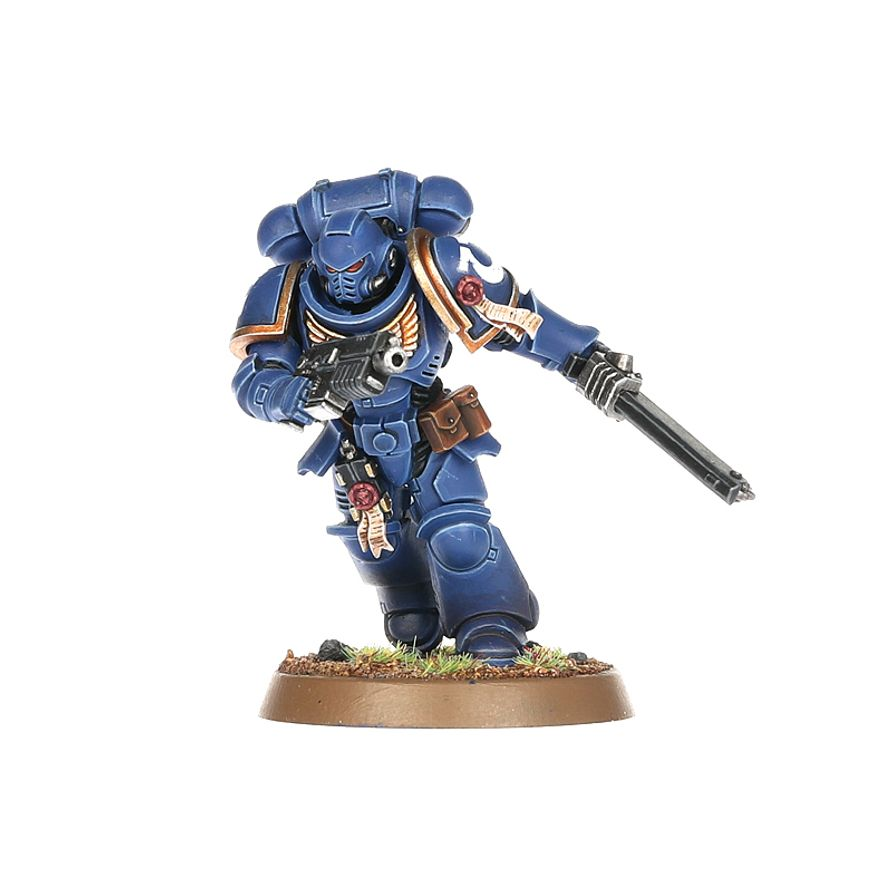
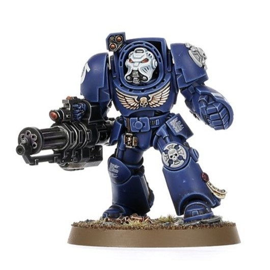
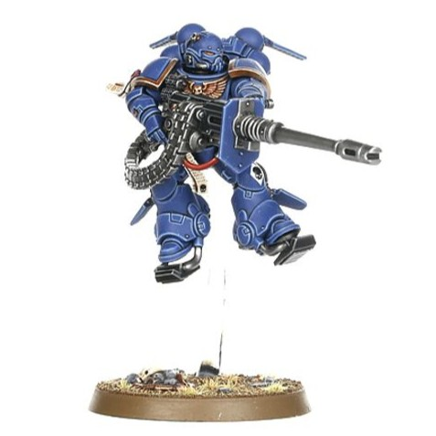
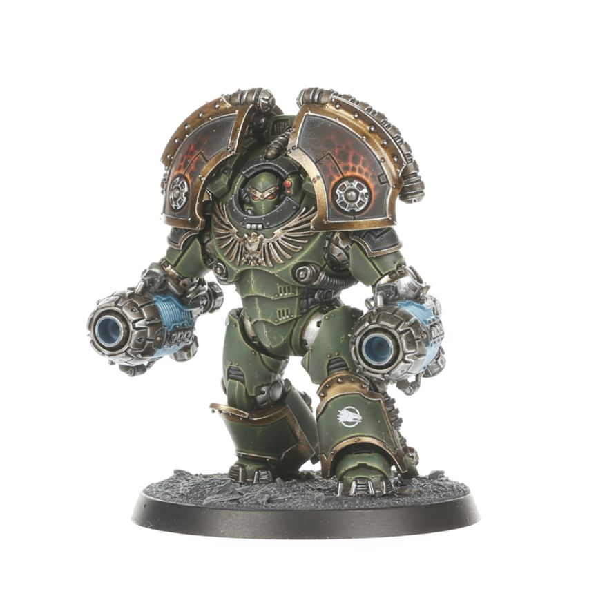

Space Marine
This is a picture of a Space Marine. It's from a game I like called Warhammer 40,000. It takes place 40,000 years in the future, where there is only war happening. These dudes are super-humans designed to fight monsters and aliens. I think they look cool. They come in other specialized units as well, a couple of which are shown on this page.

Terminator
This is a Space Marine in Terminator armor. Apparently, they reserve this armor for only the best veterans because it's so tough. I like them mainly because of their chunkiness. I love that they're so armored up that they look like a hunchback. And the big hands they have on one side (called Power Fists) help with the whole "chunk" aesthetic, too.

Suppressor
This is a Suppressor. They have a jet pack that they fly with, and a big gun. I really don't know much about them, but they look really cool and I hope to add some to my collection someday. Speaking of, in this game you muster an army of little plastic figurines (which are unfortunately kind of expensive) and battle other armies. I haven't played a game yet because this hobby seems to be incredibly niche.

Saturnine Terminator
Don't ask me what "Saturnine" means ('cause idk), but I LOVE the look of these bad boys. Dude's built like a truck and has plasma guns instead of hands. It's another type of that Terminator armor with a very different look. There's pretty much nothing I don't like about these guys, except the price tag. They are extra expensive compared to the other models shown here.